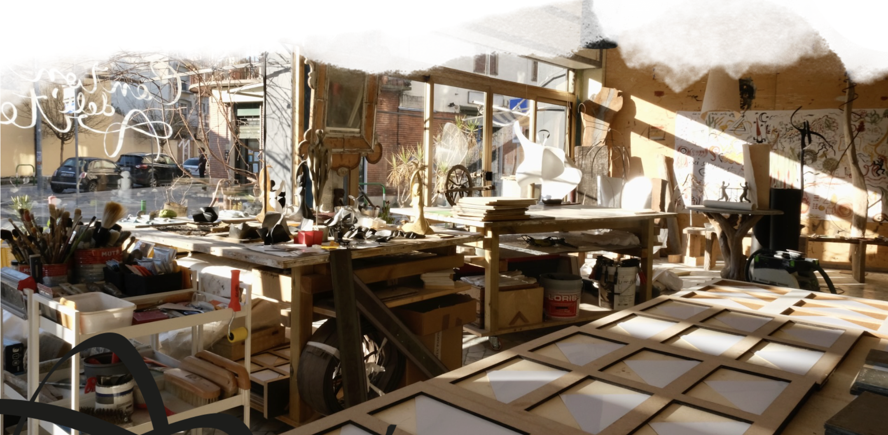
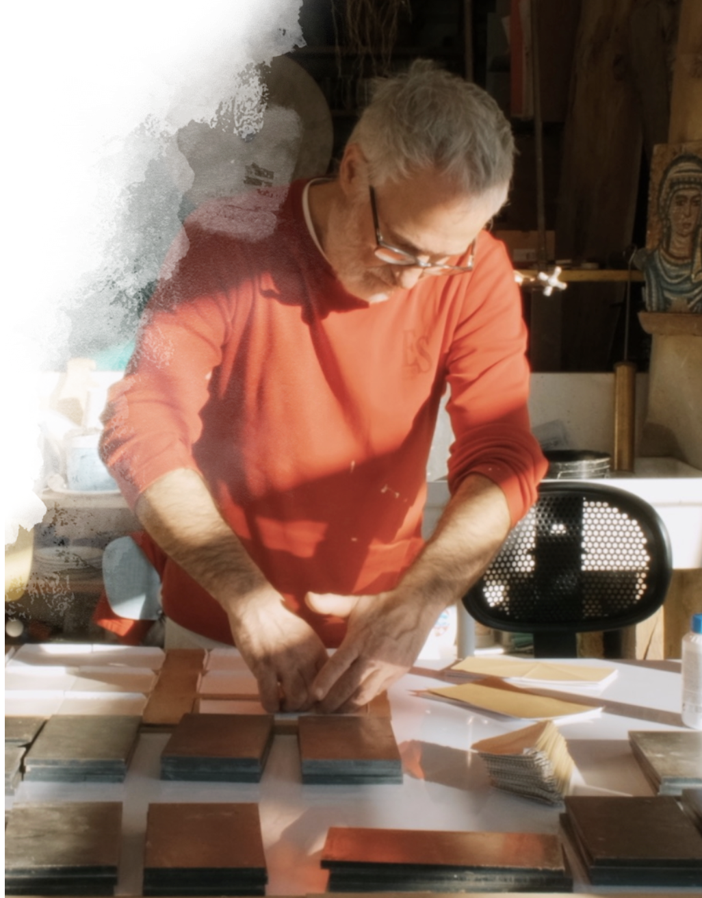
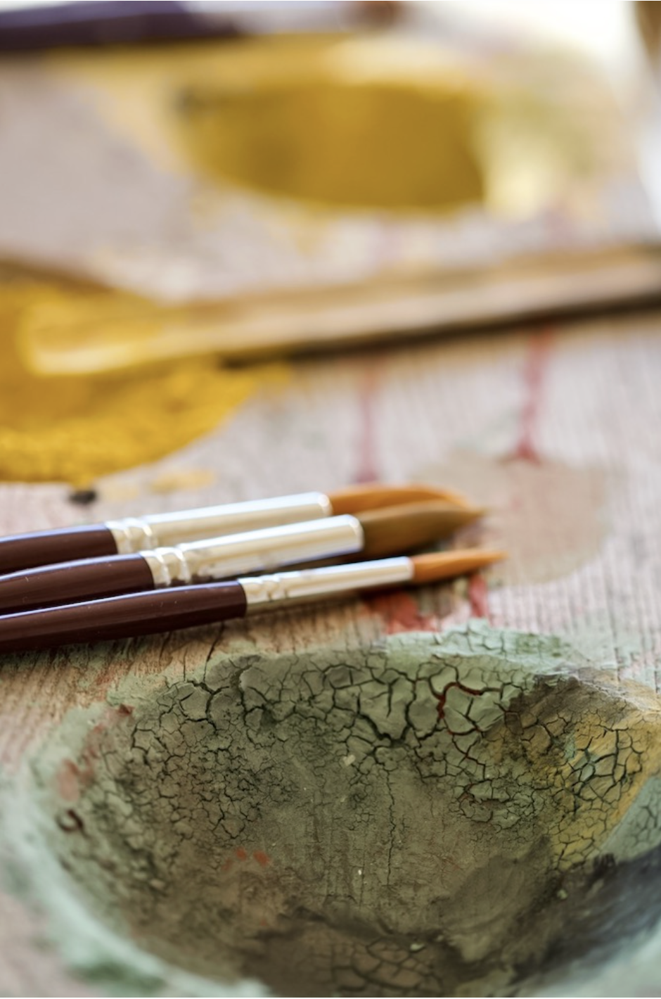

Canton dell'Arte nasce nel 2009 per un felice connubio tra bioedilizia e artigianato artistico.
In questi anni gli assetti dello spazio sono variati più volte ma il fulcro attorno a cui tutto si è mosso è sempre stata la relazione umana. Il trovarsi per far cose ha così avuto il senso di trovarsi per imparare a fare… per imparare a essere!
Scopri Tela Totale



Su di me
Artigiano e Artista
Sono un artigiano di Padova, nato in quel periodo in cui si diceva che l'immaginazione sarebbe andata al potere.
Attratto dalle possibilità dell'immaginazione ho fatto dell'artigianalità lo strumento per indagare e sperimentare il mondo sensoriale sempre con curiosità e un pizzico di poesia.
Così i materiali, gli attrezzi, le situazioni mi hanno educato e formato.
Un cenno immancabile, che è sincero ringraziamento va ai miei genitori, ai miei maestri, a mia moglie e soprattutto ai miei figli che puntualmente, passo dopo passo, mi hanno mostrato a specchio la mia vera anima.
“Un modo di stare insieme agli altri ed essere autenticamente sé stessi.”— Stefano Nicoletti
Arte

Che vuol dire?
Sono alcune delle Muse che
nella nostra tradizione con corpi magici di donna
incarnano le possibilità espressive
con cui ancora oggi amiamo chiamare le Arti.


 L'Atelier — Corpo Vela
L'Atelier — Corpo Vela
La poetica del Corpo Vela si colloca nella dinamica contemporanea delle tecniche come una proposta di indagine estetica sul modello da cui si trae ispirazione per realizzare l'"ARTIFICIALE"
qual è questo modello se non la Natura e, in Lei… noi stessi!
inondano il mondo sensoriale
stimolano l'alchimia delle emozioni
giocano con lo spirito
e si manifesta il senso stesso dell'Essere
Arte in greco antico fu una parola che oggi riverbera ancora nel nostro vocabolario nella forma di "Tecnica"….
ecco un nuovo indizio:
Arte così significa saper come si fanno le cose!
Come ci rapportiamo col mondo…
come comunichiamo!
E non è forse l'Arte delle relazioni la più complessa e raffinata?
La Relazione, Oggetto assolutamente intangibile, ma reale, che è Soggetto esso stesso
e che suggerisce il senso del divino.
Mi chiedo: posso isolarmi anche solo per un attimo dal mondo?
Posso separare un solo battito del cuore da tutti i battiti di una vita?
Un solo respiro?
Un solo pensiero?
Arte diviene nome di sostanza viva e, pane al pane, l'Arte più utile è sempre stata quella di saper comporre una domanda utile al momento giusto!
 Il Decoro
Il Decoro
Cos'è la decorazione? La decorazione è proprio la via del decoro! La dignità che nell'aspetto, nei modi, nell'agire è conveniente alla condizione sociale di una persona o di una categoria.
“Si debbe osservare il decoro, cioè che li movimenti sieno annunziatori dei moti de l'animo.” — Leonardo
Quindi una grammatica di elementi ordinati e condivisi che rende riconoscibili ruoli e funzioni di cose e persone.
Questa grammatica ha una sintassi che evolve proprio come il linguaggio parlato, è così che gli esperti sanno riconoscere i periodi dai particolari distintivi che li caratterizzano. Ad esempio, i ciuffi post punk di alcuni capi di stato di questi tempi li rende riconoscibili come tali?
Il minimalismo contemporaneo, nella sua assenza di decorazioni rimane una forma di decoro e i posteri ci penseranno come una società austera e razionale!
Forma insuperata di minimalismo fu invece il rivestimento di marmo lucidato di quei puri e immensi pentaedri che sono state e sono le piramidi egizie, evocanti in un modo terribile e affascinante la trascendenza nella regalità.
Al Canton dell'Arte vengono utilizzati in purezza o ricombinati tra loro per la piacevolezza di un rapporto diretto con gli elementi naturali.
Il Marmorino Veneziano, per il nobile e il villano
il Pastellone, anche fuori di regione
il Cocciopesto, vanitoso ma modesto
gli Spatolati, per i single e gli accasati
le Vernici, delle tinte che tu dici
i Colori, con la testa si va fuori!
per pareti e pavimenti
per i tristi e i contenti


 video
video
Guarda tutti i video sul canale Vimeo di Canton dell'Arte ↗
atelier

Il gioco della pittura senza tema né patema
Un modo di stare insieme agli altri ed essere autenticamente sé stessi…
Una Pittura anti bravura!
Ciò che serve è trasportare il colore dalla Tavolozza Comune alla Tela Totale dopo averlo amalgamato con le proprie mani (col pennello): acqua, pigmento naturale, un po' di amido, ed ecco, siamo pronti per lasciare la nostra Traccia.
La Traccia, il Segno.
Ogni segno è impronta di un momento, dell'emozione, del sentimento, del pensiero di quel momento…
Il più piccolo movimento vibra e si manifesta attraverso la magica chioma del pennello fluendo il colore che si appoggia sulla tela.
Una tela madre che tutto accoglie come il velo della nostra madre Terra ci accoglie, dandoci senso nel nostro operare.

Tela Totale


 La Tela Totale
La Tela Totale


 Canale Vimeo
Canale Vimeo
Sessioni di pittura, workshop creativi, tecniche decorative e molto altro. Visita il canale completo per tutti i video dell'atelier.
Tutti i video di Stefano Nicoletti: sessioni di pittura, workshop, tecniche decorative, Tela Totale e molto altro ancora.
Visita il canale ↗
canton dell'arte
stefano nicoletti atelier